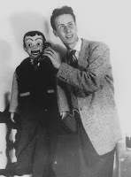

Whose Influence?
1/25/2010
By Dave Miller
"Who has influenced you the most with your ventriloquism?" Have you ever been asked that question?
In 1954, I was getting ready to start high school when I received a party invitation from Youth for Christ, an inter-denom
Bob invited me to join him on the big Saturday Youth for Christ show. It was hosted at the Portland Civic Auditorium (now known as the Arlene Schnitzer Concert Hall.) It seated more than 3,000 people and was, at that time, Portland's largest auditorium. Bob wrote a few jokes for me to use and coached me in timing, delivery and anything else I needed to do a good show.
Bob introduced me to the audience for my short little show. When I was done, Bob asked me if I would like to sing for the audience. I said sure and that I loved to sing. I started "singing" a spiritual song called "He's the Lily of the Valley" and of course it was Bob that was really doing the singing as I moved my lips, I walked off the stage "singing" the song and the voice faded away with me. Soon, though, the voice changed and started getting louder and louder as Bob brought his figure "Jiggers Johnson" out of his trunk. Bob's skill as a distant vent pulled this little stunt off brilliantly and when Jiggers finished the song, Bob called me back on the stage and shared the applause from the audience with me. I am just one of many that Bob Bradford has had a profound influence on. The Great Lester told me that Bob was one of the best ventriloquists he ever coached, and I'm sure he was. It was such an honor to have known Bob Bradford and to have had his influence in my life.
Who has influenced you the most with your ventriloquism?
"Who has influenced you the most with your ventriloquism?" Have you ever been asked that question?
In 1954, I was getting ready to start high school when I received a party invitation from Youth for Christ, an inter-denom
{kind=link}

inational Christian ministry organization. The invitation said ventriloquist Bob Bradford (left) would entertain. I had recently taken up ventriloquism, doing shows at school, church, scouting events, any place that needed an entertainer. Any chance to see a live ventriloquist act was a real treat to me. Bob was technically the best ventriloquist I had ever seen, and had been taught by The Great Lester. Bob would bring out a trumpet and have his figure "Jiggers Johnson" play it. Obviously, it was Bob making the trumpet sound. I watched with amazement as he completed this feat without showing a single facial movement. After "Jiggers" was through playing the trumpet, Bob placed the trumpet back in the case and made the sound of the trumpet just fade away as he closed the lid. At age 13, I was blown away by Bob's mastery of ventriloquism. Following Bob's show there was a question and answer session. Some of my classmates told Bob that I was a ventriloquist too. He spent a great deal of time talking with me and giving me information about The International Brotherhood of Ventriloquists, W.S. Berger, The Great Lester, etc. Information on ventriloquism was scarce in Portland, Oregon in 1954 and his conversation opened up a whole new world to me. Bob helped me to hone my skills as a budding ventriloquist and that help lasted a lifetime.Bob invited me to join him on the big Saturday Youth for Christ show. It was hosted at the Portland Civic Auditorium (now known as the Arlene Schnitzer Concert Hall.) It seated more than 3,000 people and was, at that time, Portland's largest auditorium. Bob wrote a few jokes for me to use and coached me in timing, delivery and anything else I needed to do a good show.
Bob introduced me to the audience for my short little show. When I was done, Bob asked me if I would like to sing for the audience. I said sure and that I loved to sing. I started "singing" a spiritual song called "He's the Lily of the Valley" and of course it was Bob that was really doing the singing as I moved my lips, I walked off the stage "singing" the song and the voice faded away with me. Soon, though, the voice changed and started getting louder and louder as Bob brought his figure "Jiggers Johnson" out of his trunk. Bob's skill as a distant vent pulled this little stunt off brilliantly and when Jiggers finished the song, Bob called me back on the stage and shared the applause from the audience with me. I am just one of many that Bob Bradford has had a profound influence on. The Great Lester told me that Bob was one of the best ventriloquists he ever coached, and I'm sure he was. It was such an honor to have known Bob Bradford and to have had his influence in my life.
Who has influenced you the most with your ventriloquism?